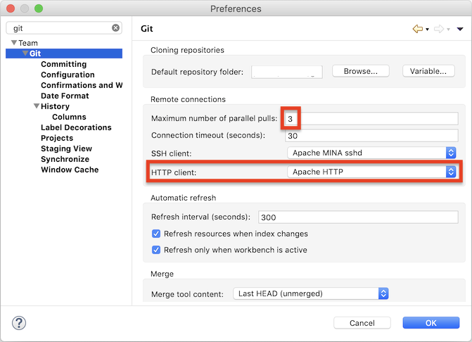
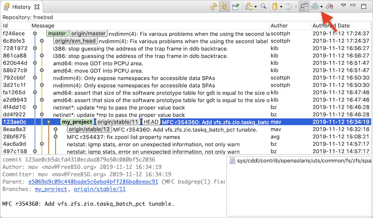
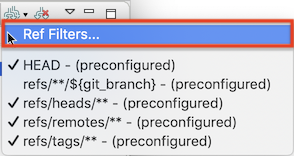
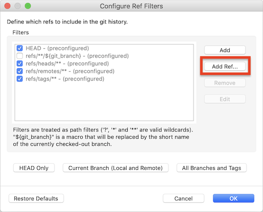
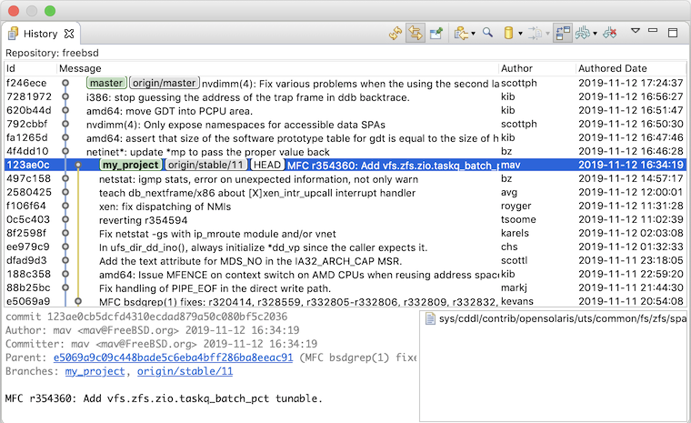
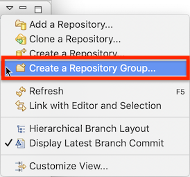
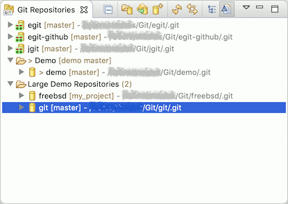

| EGit 5.6 New and Noteworthy | ||
|---|---|---|
|
|
||
| Contributors | ||
There is a new preference and a changed default in the EGit preferences:

The default for the maximum number of parallel pulls has been changed from "1" (no parallelism) to "3". When you pull several repositories at once, EGit will newly by default use up to three threads to execute the git pull commands. This can be significantly faster than pulling one repository after another.
EGit 5.6 uses by default the Apache HTTP library for git operations over HTTP(S). The user can choose in the global EGit preferences whether to use the standard built-in HTTP client of Java or the Apache HTTP library.
The Git history view newly allows the user to define for each repository exactly which branches to show. Before EGit 5.6, one could show either the full history of all branches and tags, or the history starting from HEAD, i.e., the currently checked out commit or branch. Newly it is possible to define exactly which branches (or more precisely in git terms: which refs, since it could also be tags or other refs) to consider at all for the history being shown.

The "Branches to Show" button (formerly "Show All Branches") now has a drop-down menu. In the above screenshot, EGit shows the history of all branches in the FreeBSD git repository. This is a fairly large repository that has more than 500 branches, and computing and displaying this history takes some time.

The drop-down menu shows the currently defined ref filters for this repository. Individual filters can be switched on or off; only refs with names that match enabled filters are included in the history. There's also an entry "Ref Filters..." to define new filters. The dialog uses the git names to match refs (branches, or tags): "refs/heads/..." are local branches; "refs/remotes/..." are upstream branches, and "refs/tags/..." are tags.

"Ref Filters..." opens a configuration dialog where the user can add new filter expressions, or delete or edit existing ones. Predefined filters cannot be deleted, but they can be disabled by removing their check mark. Filter expressions may contain the wildcards ?, *, or **. A special placeholder [CURRENT-BRANCH] matches the currently checked out branch, so "refs/**/[CURRENT-BRANCH]" will match both "refs/heads/some_branch" and "refs/remotes/origin/some_branch" if local branch "some_branch" is currently checked out.
Note the many duplicate commits shown between the "master" branch and the "origin/svn_head" branch in the above FreeBSD history screenshot. This is because the FreeBSD repository at GitHub is actually a git mirror of an SVN repository, but these commits are not really interesting here and only clutter the display. A user who wanted to start developing a fix would create his own (local) feature branch "my_project" and could then restrict the history to show a more focused view.

In this example we've added new filters for the "my_project" local branch, for the "origin/stable/11" branch (since that's the upstream branch "my_project" is based on; it's probably interesting to see when that advances), and for "origin/master" (always good to know what happens in the latest and greatest version). We've left "HEAD" enabled so we always get a meaningful history even if we temporarily switch branches or check out some random commit. Double-clicking on one of the custom filters in the table will let the user edit the filter text directly.
With these settings, the git history looks like this:

The former "Show All Branches and Tags" preference at Preferences→Team→Git→History still exists; it now defines the initial default settings for the ref filters if the user has not defined any custom filters. The user can define different custom filters for different repositories.
With EGit 5.6 it is possible to organize the repositories shown in the repositories view in groups. Groups can be created via the context menu, sub-menu "Repository Groups", or via the view menu:

Groups are like logical folders; they are a purely visual structuring aid: moving a repository into or out of a group does not move the repository on disk. A group does not have a folder on the disk.

Repositories can be moved into or between groups by drag'n'drop or via the context menu. Dragging a repository from a group into the white unused area of the view moves the repository out of the group, back to top-level. Groups can be renamed or deleted via the context menu. Deleting a group never deletes the repositories contained, those just go back to the top level. Nested groups are not supported.
EGit 5.6 has gotten some big performance improvements "under the hood". It accesses git config files far less frequently than before, and the way the Eclipse workspace is refreshed after checking out files, for instance after a branch switch, has been tuned such that it should refresh only files actually modified.
These changes are basically invisible in the UI but make the UI generally much snappier. Context menus open quicker, refreshes take much less time, and decorations appear quicker. These are general improvements, but the effects will be most notable for users having their home directory (and thus their git user config file ~/.gitconfig) on a network drive.
EGit 5.6 includes lots of less noticeable improvements in the UI, plus a number of bug fixes. The complete list of new features and bug fixes is available in the release notes.
|
|
||
| Contributors |